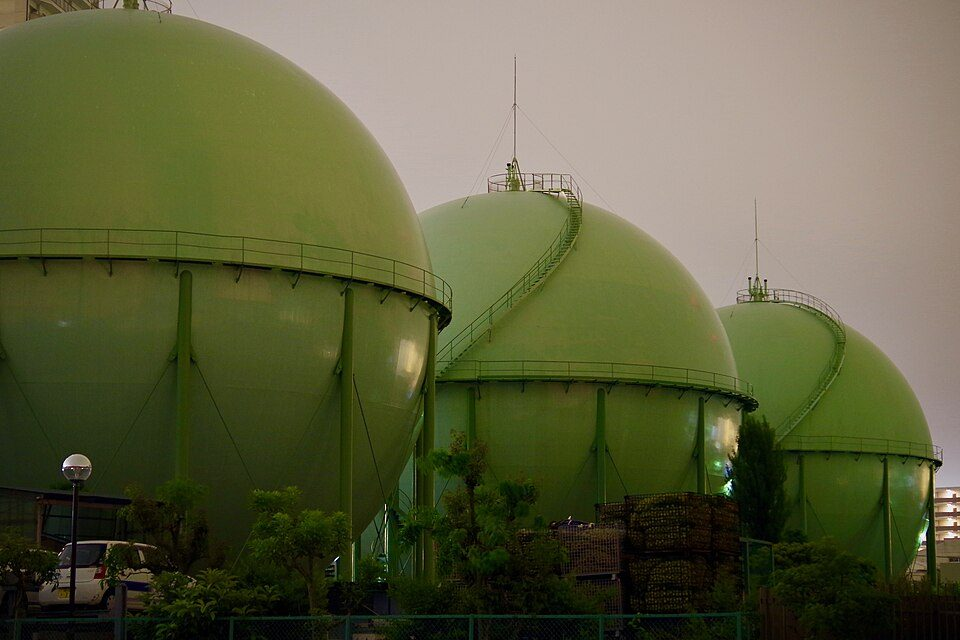
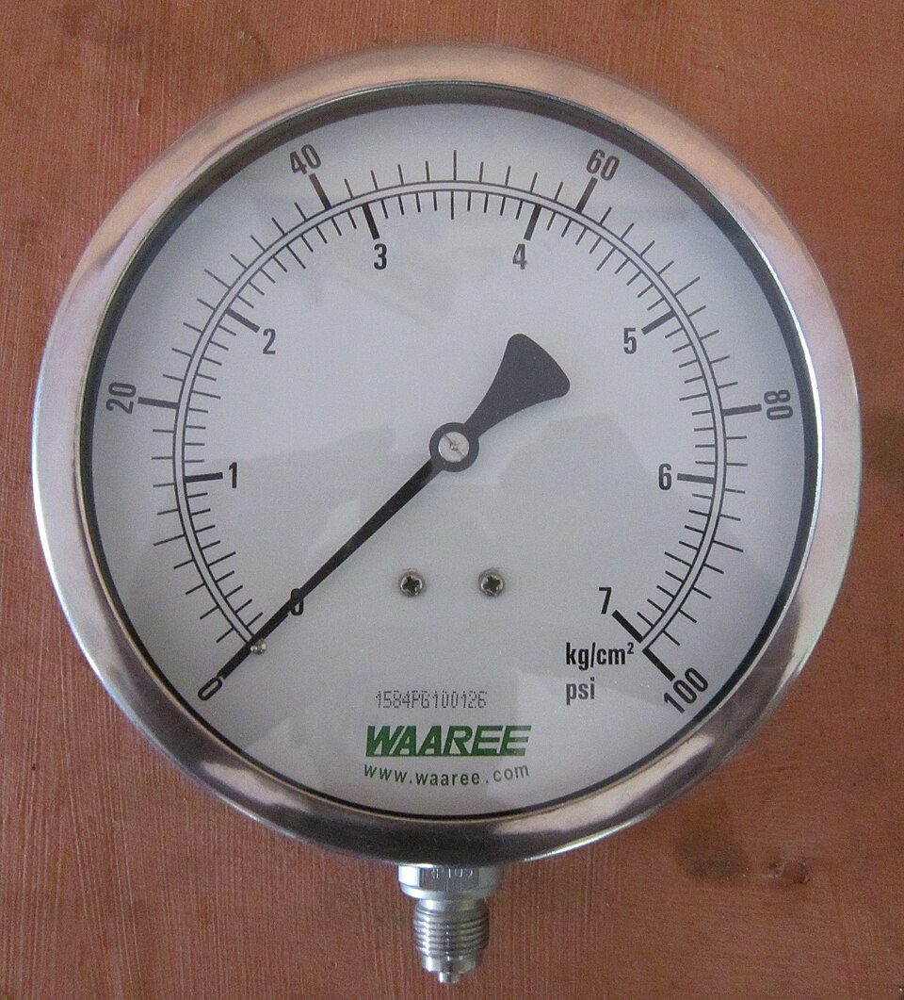
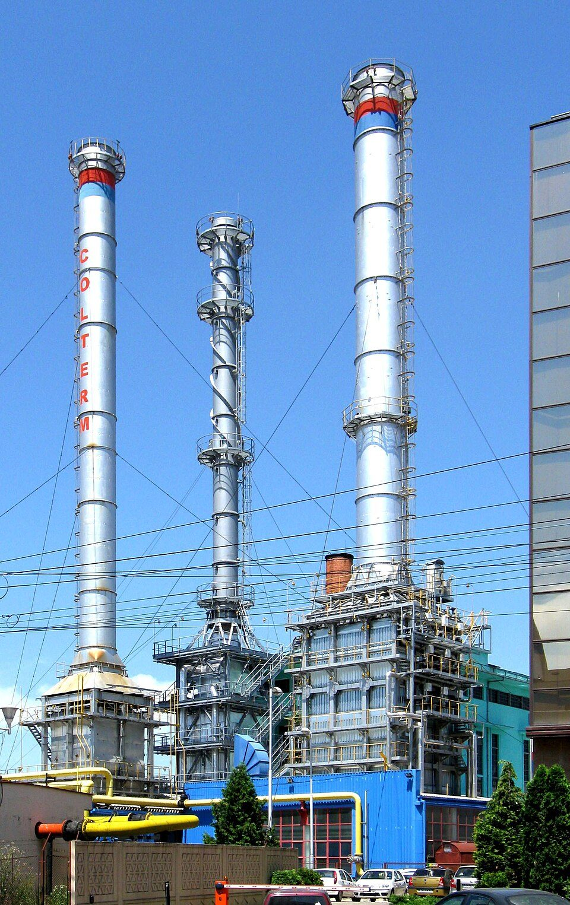
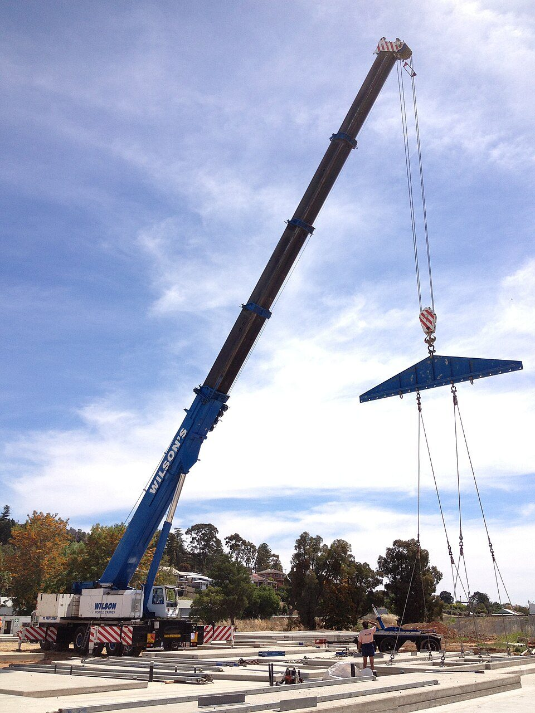
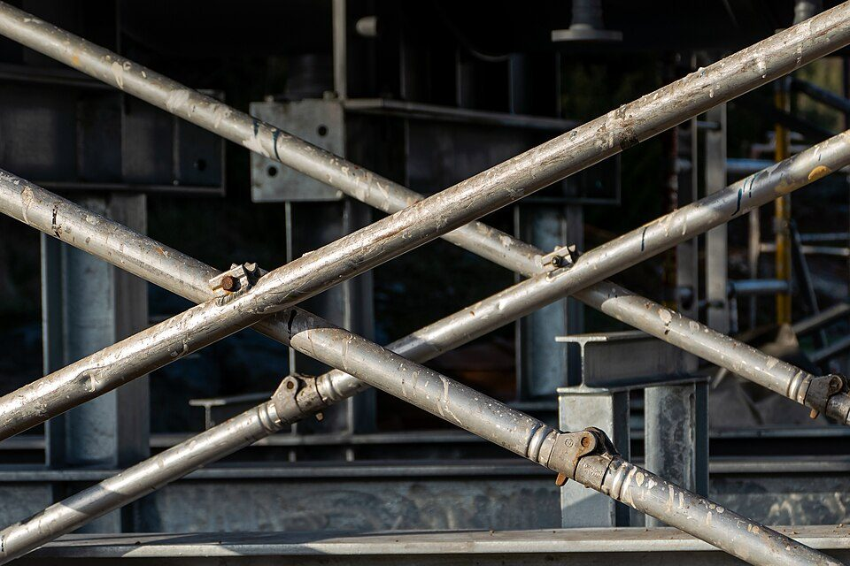
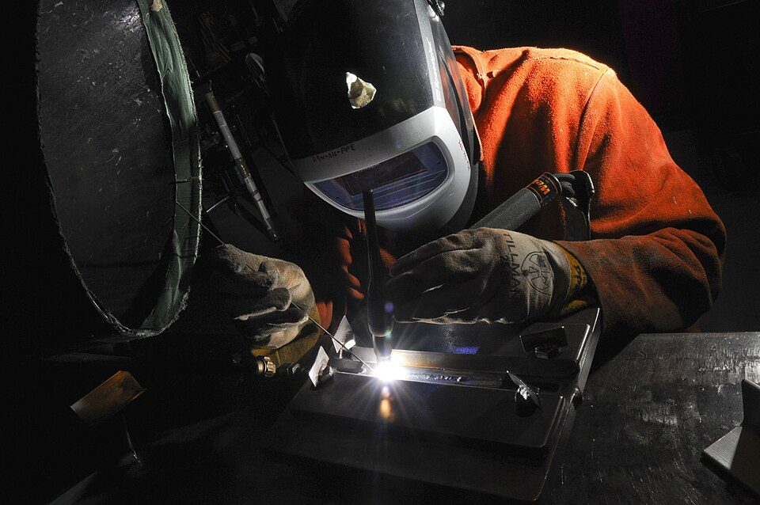

プラントの仕事に役立つ資格：法律で必要な資格の見分け方、試験・合格率・受験料と取る順番（2026年版）
要点まとめ
プラント（化学工場・製油所・発電所などの大きな生産設備）では、法令で決まった役割を、資格を持つ人の中から選ぶ場面が多くあります。この記事では、プラントで働く人・働きたい人に向けて、運転・保安、工事・保全、施工管理・検査・設計の仕事に関係する資格を、試験を行う団体の資料と法令の原文で整理しました。「法律で必ず要る資格」と「あると評価される資格」を分け、試験の中身・合格率・受験料、2023〜2028年の変更、仕事別に取る順番の例を紹介します。危険物取扱者の乙4は、乙4の記事にまとめています。

資格の種類と「必ず要る」の意味
プラントの仕事に関係する資格は、取り方で次のように分けられます。
| 種類 | 取り方 | 例 |
|---|---|---|
| 免許・免状 | 国家試験に合格し、免許・免状の交付を受ける | ボイラー技士、電気主任技術者、高圧ガス製造保安責任者、危険物取扱者、エネルギー管理士、公害防止管理者 |
| 技能講習 | 登録を受けた機関の講習を修了する[10] | 玉掛け、フォークリフト、作業主任者（足場・酸素欠乏など） |
| 特別教育 | 事業者が行う教育を受ける[10] | アーク溶接、低圧の電気、足場の組立て |
| 選任のための講習・教育 | 試験はなく、決められた講習・教育を受けた人などから選ぶ[10][11] | 化学物質管理者、保護具着用管理責任者 |
| 民間・JISの資格 | 団体の試験に合格する。工場の認定や発注者の要件などで求められる[12] | 溶接技能者、非破壊試験技術者、CAD利用技術者 |
「選任」：決まった役を、資格のある人から選ぶ
事業者が、資格を持つ人の中から責任者を選ぶ義務
ボイラー取扱作業主任者はボイラー技士から[1]、電気主任技術者は主任技術者免状を持つ人から（電気事業法第43条）[13]、高圧ガスの保安係員は製造保安責任者免状を持つ人から（高圧ガス保安法第27条の2）[14]選ぶことが決まっています。公害防止管理者[15]、エネルギー管理者[16]、化学物質管理者[10]も、選任が義務になっている役です。
「就業制限」：資格がないと、その業務につけない
クレーン・フォークリフト・玉掛けなどは免許か技能講習が要る
労働安全衛生法施行令は「就業制限に係る業務」として、つり上げ荷重1t以上の移動式クレーンの運転や、最大荷重1t以上のフォークリフトの運転などを挙げています[2]。業務ごとに必要な免許・技能講習は、労働安全衛生規則で決まっています[10]。ボイラーも、小規模・小型のものを除き、ボイラー技士の免許がないと取り扱えません[1]。
どの資格が要るかは、設備の種類と規模で決まる
同じボイラーでも、伝熱面積で必要な級が変わる
ボイラー取扱作業主任者は、伝熱面積の合計が25㎡未満なら二級以上、25㎡以上500㎡未満なら一級以上、500㎡以上なら特級の免許を持つ人から選びます（貫流ボイラーには別の扱いがあります）[1][17][18]。エネルギー管理士が必要になるのは、熱と電気を合わせた年間使用量が原油換算3,000kl以上の第一種エネルギー管理指定工場のうち、製造業など5業種です[16]。第三種電気主任技術者が保安監督できるのは、電圧5万V未満の電気施設（出力5,000kW以上の発電所を除く）です[3]。
運転・保安の資格
プラントの運転・保安・保全の仕事でよく名前が挙がる7つの資格を、根拠の法律、必要になる場面、受験資格、受験料、合格率で比べました。
| 資格 | 根拠の法律 | 必要になる場面 | 受験資格 | 受験料 | 合格率 |
|---|---|---|---|---|---|
| 二級ボイラー技士 | 労働安全衛生法（ボイラー及び圧力容器安全規則）[19] | ボイラーの取扱い。伝熱面積25㎡未満の作業主任者[1] | 不要[1] | 8,800円[20] | 52.9％（令和7年度）[21] |
| 危険物取扱者 甲種 | 消防法[22] | すべての種類の危険物の取扱いと、その立会い[23] | 必要（化学の学科の卒業など）[4] | 7,200円[23] | 34.0％（令和7年度）[24] |
| 高圧ガス製造保安責任者 | 高圧ガス保安法[14] | 高圧ガスの製造事業所の保安係員など[14] | 確認できなかった（下の注） | 甲種17,300円、乙種11,100円、丙種9,800円（電子申請）[25] | 甲種化学18.6％、乙種化学34.6％（令和7年度、全科目受験）[26][27] |
| 第三種電気主任技術者 | 電気事業法[13] | 電圧5万V未満の電気施設の保安監督[3] | 不要[3] | 7,700円（インターネット申込み）[28] | 約13.0％（令和7年度、筆者の計算）[9] |
| エネルギー管理士 | 省エネ法[16] | 第一種エネルギー管理指定工場（製造業など）のエネルギー管理者[16] | 不要（免状には実務1年以上）[29] | 17,000円[30] | 約34.4％（令和8年度、筆者の計算）[31] |
| 公害防止管理者 | 特定工場における公害防止組織の整備に関する法律[15] | 特定工場で、施設の区分ごとに[15] | 不要[32] | 11,600円または12,300円（区分による）[32] | 36.2％（令和7年度、全区分）[33] |
| 化学物質管理者・保護具着用管理責任者 | 労働安全衛生規則[10] | 決められた化学物質を製造・取り扱う事業場ごと[10] | 試験なし（講習・教育） | ― | ― |
合格率の「筆者の計算」は、団体が公表した受験者数と合格者数から筆者が割り算した値です。高圧ガス保安協会のサイトは、閲覧日の2026年11月25日に公開を一時停止していました[34]。このため、高圧ガスの受験資格と令和8年度の試験日は確かめられませんでした。高圧ガスの受験料と合格率は、インターネット・アーカイブに保存された協会のページで確かめました。

ボイラー技士（特級・一級・二級）
二級は受験資格不要。ただし合格だけでは免許が出ない
二級の試験は「ボイラーの構造」「ボイラーの取扱い」「燃料及び燃焼」「関係法令」の4科目（各10問）で、試験時間は3時間です[1]。科目ごとに40％以上、合計で60％以上をとれば合格です[1]。二級の免許を受けるには、合格に加えて、ボイラー実技講習の修了や、6か月以上の実地修習などのどれかが必要です[19]。

高圧ガス製造保安責任者
甲種・乙種・丙種と、冷凍機械の区分がある
高圧ガス保安法は、第一種製造者などに、事業所ごとに製造保安責任者免状を持ち、製造の経験がある人から保安係員を選ぶよう定めています[14]。試験は法令・保安管理技術・学識の3科目です（第三種冷凍機械は学識なし）[25]。甲種化学・甲種機械・第一種冷凍機械は経済産業大臣、乙種・丙種・第二種と第三種の冷凍機械は都道府県知事が行う試験です[25]。
危険物取扱者 甲種
甲種は、受験に化学の学歴や乙種の免状などが要る
受験資格は、大学などで化学の学科を卒業、化学の授業科目を15単位以上修得、乙種の免状と製造所等での実務経験2年以上、乙種の4種類以上の免状、化学を専攻した修士・博士のどれかです[4]。試験は法令15問・物理学及び化学10問・性質と火災予防・消火20問の計45問で、試験時間は2時間30分、科目ごとに60％以上で合格です[38][39]。令和7年度は受験者20,296人のうち6,900人が合格しました[24]。甲種・乙種・丙種の違いは乙4の記事で紹介しています。
第三種電気主任技術者（電験三種）
電圧5万V未満の電気施設の保安を監督できる
電気事業法は、事業用電気工作物を設置する者に、主任技術者免状を持つ人から主任技術者を選ぶよう定めています[13]。第三種で保安監督ができるのは、電圧5万V未満の電気施設（出力5,000kW以上の発電所を除く）です[3]。試験は理論・電力・機械・法規の4科目で、CBT方式（パソコンで受ける方式）と筆記方式から選べます[3]。受験資格の制限はありません[3]。
エネルギー管理士
試験は誰でも受けられるが、免状には実務1年以上が要る
第一種エネルギー管理指定工場のうち、製造業・鉱業・電気供給業・ガス供給業・熱供給業の5業種は、エネルギーの使用量に応じて、エネルギー管理士から1〜4人のエネルギー管理者を選びます[16]。試験は熱分野か電気分野を選び、課目ごとに配点の60％以上で合格です[29]。免状を申請するときは、エネルギーの使用の合理化に関する実務に1年以上ついた証明が要ります（合格の前でも後でもよい）[29]。
公害防止管理者
13区分。受験資格はなく、科目別の合格制度がある
特定工場では、ばい煙発生施設や汚水等排出施設などの区分ごとに公害防止管理者を選びます[15]。試験は大気関係（第1〜4種）、水質関係（第1〜4種）、ダイオキシン類、騒音・振動、粉じん、主任管理者などの13区分で、五者択一式のマークシートです[32]。年齢や実務経験などの条件はありません[32]。
新制度・改正 化学物質管理者・保護具着用管理責任者
試験はなく、2024年4月から選任が義務に
リスクアセスメント（危険性・有害性の評価）が義務になっている化学物質を製造・取り扱う事業場ごとに、化学物質管理者を選ぶことになりました[5][10]。選ぶべき事情が生じてから14日以内に選任します[10]。製造する事業場では、厚生労働大臣が定める講習（講義と、3時間以上の実習）を修了した人などから選びます[10][6]。この講習の告示は、2024年4月1日から適用されています[6]。
くわしく
費用の例は東京労働基準協会連合会の一般の料金（令和8年9月1日現在、税込、テキスト代を含む）です[43]。
工事・保全で要る技能講習・特別教育・作業主任者
工事や保全の現場では、クレーンやフォークリフトの運転、玉掛け、溶接、足場の組立てなど、法令で資格や教育が決められた作業が多くあります。機械の大きさなどで、技能講習（または免許）が要る範囲と、特別教育でよい範囲が分かれます[2][10]。
| 作業 | 技能講習・免許が要る範囲 | 特別教育でよい範囲 | 費用の例 |
|---|---|---|---|
| 玉掛け | つり上げ荷重1t以上のクレーンなど：玉掛け技能講習[2][10] | 1t未満[10] | 技能講習33,030円 |
| 移動式クレーンの運転 | つり上げ荷重1t以上：免許。5t未満は小型移動式クレーン運転技能講習でもよい[2][10] | 1t未満[10] | 小型移動式クレーンの技能講習41,855円 |
| フォークリフトの運転 | 最大荷重1t以上：技能講習[2][10] | 1t未満[10] | 技能講習（31時間）46,230円 |
| 高所作業車の運転 | 作業床の高さ10m以上：技能講習[2][10] | 10m未満[10] | 技能講習42,570円、特別教育24,310円 |
| ガス溶接・溶断 | 可燃性ガスと酸素を使う溶接・溶断・加熱：ガス溶接技能講習など[2][10] | ― | 技能講習19,030円 |
| アーク溶接 | ― | アーク溶接機を使う溶接・溶断などの業務[10] | 特別教育19,910円 |
| 電気の取扱い | ― | 高圧・特別高圧の充電電路の業務、低圧の充電電路の敷設・修理など[10] | 低圧電気の特別教育18,370円 |
| 足場の組立て | ― | 足場の組立て・解体・変更の業務（地上などでの補助作業を除く）[10] | この機関の表にはない |
費用は講習機関ごとに違います。特別教育の費用は一般の料金です。高さ2m以上で作業床を設けにくい場所で、フルハーネス型の墜落制止用器具を使う作業も特別教育の対象です[10]。

玉掛け技能講習：資格がなければ19時間
資格のない人は、学科と実技をあわせて19時間
コベルコ教習所の案内では、資格を持たない人のコースは19時間です。学科はクレーン等に関する知識・玉掛けの方法・力学・関係法令、実技は合図と玉掛けです[44]。クレーンや移動式クレーンの免許、小型移動式クレーンなどの技能講習を修了した人は、16時間のコースになります[44]。
作業主任者は、作業ごとに「選ぶ」役
足場・酸素欠乏・有機溶剤などの作業ごとに選任する
作業主任者は、危険・有害な作業ごとに、事業者が技能講習の修了者などから選ぶ人です。対象の作業は労働安全衛生法施行令第6条が、必要な技能講習は労働安全衛生規則などが決めています[2][10]。
| 作業主任者 | 対象の作業 | 費用の例 |
|---|---|---|
| 足場の組立て等作業主任者 | つり足場・張出し足場・高さ5m以上の足場の組立て・解体・変更[2][10] | この機関の表にはない |
| 酸素欠乏・硫化水素危険作業主任者 | 酸素欠乏危険場所での作業（硫化水素の危険もある場所）[2][10] | 25,410円 |
| 有機溶剤作業主任者 | 屋内作業場などで有機溶剤を製造・取り扱う作業[2][10] | 17,050円 |
| 特定化学物質及び四アルキル鉛等作業主任者 | 特定化学物質を製造・取り扱う作業[2][10] | 17,050円 |
費用の例は、上の表と同じ東京労働基準協会連合会の技能講習（全科目、税込）です[43]。

施工管理・検査・設計の資格
新制度・改正 施工管理技士と技士補
1級の第一次検定は、19歳以上なら受けられる
第二次検定は、第一次検定に合格したあとの実務経験で受けるしくみになりました。1級は、1級の第一次検定合格後に実務経験5年以上、または特定実務経験1年以上を含む3年以上などです[7]。2級の第一次検定は、これまでどおり17歳以上で受けられます[7]。令和10年度（2028年度）までは、改正前の受検資格で第二次検定を受けることもできます[7]。第一次検定の合格者は「技士補」、第二次検定の合格者は「技士」を名乗れます[45]。
- 2023年5月12日
施工技術検定規則などを改正する省令を公布
- 2023年7月1日
1級の第一次検定の合格者を、大学の指定学科の卒業者と同等とみなす
一般建設業許可の営業所専任技術者の要件の緩和[47]
- 2024年4月1日
技術検定の受検資格の見直しを施行
- 2028年度まで
改正前の受検資格でも第二次検定を受けられる経過措置
令和6年度から令和10年度まで[7]
会社の側から見た資格：建設業許可の営業所技術者
建設業の許可には、営業所ごとに技術者が要る
建設業法は、許可を受ける営業所ごとに「営業所技術者」を専任で置くよう定めています[48]。国土交通省の一覧（2025年12月18日施行）では、1級電気工事施工管理技士は電気工事業、1級管工事施工管理技士は管工事業で、特定建設業の技術者になれる資格とされています[49]。機械器具設置工事業では、技術士の機械部門が特定建設業の資格です[49]。
溶接技能者（日本溶接協会）
JISにもとづく民間の資格。1年ごとの確認で維持する
日本溶接協会の溶接技能者の資格は、手溶接（JIS Z 3801）、半自動溶接（JIS Z 3841）、ステンレス鋼（JIS Z 3821）、石油工業関係など、大きく9種類に分かれます[50]。基本級は、1か月以上溶接技術を習得した15歳以上の人が受けられ、試験は学科と実技です[50]。協会は、建築鉄骨の製作工場の認定や、JIS Z 3400（溶接の品質要求事項）にもとづく溶接施工の要件として使われていると説明しています[12]。

値上げ 非破壊試験技術者（JIS Z 2305）
溶接部などを壊さずに調べる検査の資格。3つのレベル
日本非破壊検査協会が認証する資格で、JIS Z 2305:2013（ISO 9712:2012 に対応）にもとづきます[54]。放射線透過試験（RT）・超音波探傷試験（UT）・磁気探傷試験（MT）・浸透探傷試験（PT）などの方法ごとに、3つのレベルがあります[54]。資格の登録件数は83,037件（2026年4月1日現在）です[55]。
技術士
第一次試験は誰でも受けられる。第二次は経験が要る
第一次試験は年齢・学歴・業務経歴などの制限がなく、五肢択一のマークシートで、受験手数料は13,000円（非課税）です[58]。第二次試験は、技術士補として通算4年を超える経験、監督者の下での4年を超える経験、または業務に通算7年を超えて従事した経験などが必要です[59]。令和7年度の合格率は、第一次が33.8％（機械部門27.6％、化学部門52.4％）、第二次が11.4％（機械部門16.2％、化学部門13.7％）でした[60][61]。
設計・CAD
CAD利用技術者試験の2級と基礎は、受験資格の制限なし
コンピュータ教育振興協会のCAD利用技術者試験には、2次元（1級・2級・基礎）と3次元（1級・準1級・2級）があります[62]。2次元の2級はCBTで個人7,150円、基礎はIBT（自宅でも受けられる）で個人5,500円です（いずれも税込）[62]。今回調べた範囲では、プラント設計に特化した公的な資格は見つかりませんでした。設計の流れはプラントの3Dモデルの記事で紹介しています。
合格率で見る難しさ
高圧ガスの2つは、科目免除を受けずに全科目を受けた人の合格率です。
もとの数：エネルギー管理研修は受験973人・修了556人[64]、1級電気工事の第一次検定は受検27,387人・合格9,947人[65]、エネルギー管理士試験は新規受験者（課目免除受験者を含む）で受験8,783人・合格3,019人[31]、電験三種は令和7年度が受験48,942人・合格6,365人、令和8年度上期が受験25,127人・合格3,223人です[9]。
科目合格・科目免除がある試験は、1回の合格率が低く出る
公害防止は、科目免除の申請がない人で14.9％
公害防止管理者試験には科目別の合格制度があり、令和7年度は科目免除の申請がない人の合格率が14.9％、申請がある人が53.9％でした[33]。高圧ガスの甲種化学では、全科目を受けた人の18.6％に対し、保安管理技術と学識の免除を受けた人は88.4％でした（令和7年度）[26]。電験三種は合格した科目を最大で連続5回まで[3]、エネルギー管理士は3年以内[29]、免除を受けられます。何年かに分けて受ける人が多い試験は、1回の合格率だけで難しさを比べにくいと筆者は考えます。
| 試験 | 第一次 | 第二次 |
|---|---|---|
| 1級管工事施工管理 | 38.7％（令和7年度）[66]、39.6％（令和8年度）[63] | 63.3％（令和7年度）[67] |
| 1級電気工事施工管理 | 41.5％（令和7年度）[68] | 69.6％（令和7年度）[68] |
| 1級建築施工管理 | 48.5％（令和7年度）[69] | 39.0％（令和7年度）[69] |
| 非破壊試験 レベル2 | 42.2％（2026年春期）[55] | 55.1％（2026年春期）[55] |
| 技術士 | 33.8％（令和7年度）[60] | 11.4％（令和7年度）[61] |
非破壊試験の「一次」は筆記、「二次」は実技です[57]。技術士の第二次試験は、第一次試験の合格者だけが受けるものではありません（技術士補の経験など、別の条件があります）[59]。
試験の時期・受験料と、2023〜2028年の変更
2026年度（令和8年度）の主な試験の日程です。高圧ガス製造保安責任者の試験日は、協会のサイトが閲覧日に公開を停止していたため確認できませんでした。
- 毎月
二級ボイラー技士
各センターで実施。北海道センターは2026年4月9日〜2027年3月5日に毎月1回[36]
- 7月16日〜8月9日
電験三種 上期（CBT方式）
筆記方式は8月30日[28]
- 8月2日
エネルギー管理士試験
- 9月6日
1級管工事施工管理 第一次検定
第二次検定は12月6日[46]
- 9月26日・27日
非破壊試験 2026年秋期の一次試験
- 10月4日
公害防止管理者試験
- 11月22日
技術士 第一次試験
- 12月13日
エネルギー管理研修の修了試験
講義は9月16日〜12月4日（オンライン）[40]
- 2027年2月4日〜28日
電験三種 下期（CBT方式）
筆記方式は2027年3月21日[28]
| 資格 | 受験料など | 税の扱い |
|---|---|---|
| ボイラー技士（各級） | 8,800円（令和5年6月1日現在の額として掲載）[20] | 非課税 |
| 危険物取扱者 甲種 | 7,200円[23] | 非課税 |
| 高圧ガス製造保安責任者 | 甲種17,300円、乙種11,100円、丙種・第三種冷凍機械9,800円（電子申請。書面は各500円高い）[25] | 非課税 |
| 第三種電気主任技術者 | インターネット7,700円、書面8,100円[28] | 非課税 |
| エネルギー管理士 | 試験17,000円[30]、研修70,000円[41] | 非課税 |
| 公害防止管理者 | 大気1種・水質1種などは12,300円、大気2種・騒音・振動などは11,600円[32] | 非課税 |
| 1級管工事施工管理 | 第一次・第二次とも12,700円[46] | 非課税 |
| 技術士 | 第一次13,000円[58]、第二次20,500円[59] | 非課税 |
| 非破壊試験技術者 | 20,900円（2026年秋期）[53] | 税込 |
| 溶接技能者 | 学科2,200円＋実技（例：A-2F 9,262円）＋認証料2,860円[51] | 税込 |
| CAD利用技術者（2次元） | 2級7,150円、基礎5,500円（個人）[62] | 税込 |
2023年から2028年までに、次のような変更がありました（予定を含みます）。
- 2023年7月1日
施工管理の第一次検定の合格者を、指定学科の卒業者と同等とみなす
一般建設業許可の営業所専任技術者の要件[47]
- 2024年4月1日
施工管理技術検定の受検資格の見直し／化学物質管理者の講習の告示を適用
- 2024年10月1日
溶接技能者の評価試験の料金を改定
- 2026年10月30日
電験三種の、原則CBT方式への移行を発表
- 2027年春期
非破壊試験の新規試験の受験料が24,200円（税込）に
- 2027年度
電験三種は、上期・下期ともCBT方式と筆記方式の両方で実施
- 2028年度
電験三種は原則CBT方式。危険物の受験申込みは原則電子申請のみ（予定）
仕事別の取る順番の例
受験資格と、免許・免状に必要な実務経験の条件をもとに、仕事別の取る順番の例を考えました。これは筆者の例で、実際に必要な資格は、会社の設備や担当する仕事で変わります。
| 段階 | 運転・保全 | 工事・施工管理 | 設計・エンジニアリング |
|---|---|---|---|
| はじめに | 乙4、二級ボイラー技士（合格後に実技講習などで免許） | 仕事に合う特別教育・技能講習（玉掛け、フォークリフト、アーク溶接など） | CAD利用技術者（2級・基礎は制限なし） |
| 次に | 設備に合う高圧ガスの免状、電験三種、乙種を4種類そろえて甲種 | 19歳以上で1級施工管理の第一次検定（技士補）、作業主任者 | 技術士の第一次試験（制限なし） |
| 経験を積んでから | 一級ボイラー技士（二級の免許後2年の取扱い経験など）、エネルギー管理士（免状に実務1年） | 1級の第二次検定（第一次合格後に実務5年、特定実務経験1年を含めて3年など）、必要に応じて溶接・非破壊試験 | 技術士の第二次試験（技術士補として4年超、または業務7年超など） |
条件の出典：二級・一級ボイラー[19]、甲種[4]、エネルギー管理士[29]、施工管理[7]、技術士[58][59]、CAD[62]。
注意
試験に合格しても、それだけでは免許・免状を受けられない資格があります。二級ボイラー技士は実技講習の修了や実地修習など[19]、エネルギー管理士は1年以上の実務の証明[29]、非破壊試験技術者は認証のための経験の期間[56]が必要です。
今回確認できなかった点
- 高圧ガス製造保安責任者の令和8年度の試験日と、受験資格の有無（協会のサイトが閲覧日に公開を停止していたため）
- 高圧ガスの免状の種類ごとに、担当できる設備の範囲
- 電験三種とエネルギー管理士の、団体が公表した合格率（記事の値は筆者の計算）
- 溶接技能者の合格率と試験日
- 足場などの作業主任者の技能講習の受講資格・時間・費用
- 1級電気工事・1級建築・2級の施工管理の受検手数料
- 建設業法の「専任技術者」が「営業所技術者」に変わった施行日
- プラント設計に特化した公的な資格（今回の範囲では見つからなかった）
- ボイラー実技講習の日数と費用
関連する記事
出典（69件）
閲覧日はいずれも2026年11月25日
- 二級ボイラー技士（資格の紹介）（安全衛生技術試験協会）
- 労働安全衛生法施行令（e-Gov法令検索）
- 令和8年度第三種電気主任技術者下期試験受験案内（PDF）（電気技術者試験センター）
- 受験資格（甲種）（消防試験研究センター）
- 化学物質による労働災害防止のための新たな規制について（厚生労働省）
- 厚生労働大臣が定める化学物質の管理に関する講習（令和4年厚生労働省告示第276号）（PDF）（厚生労働省）
- 令和６年度より施工管理技術検定の受検資格が変わります〔概要〕（PDF）（国土交通省）
- 第三種電気主任技術者試験のＣＢＴ方式への移行について（令和10年度〜）（PDF）（電気技術者試験センター）
- 第三種電気主任技術者試験の試験結果と推移（電気技術者試験センター）
- 労働安全衛生規則（e-Gov法令検索）
- 保護具着用管理責任者に対する教育の実施について（基安化発1226第1号）（PDF）（厚生労働省）
- 溶接技能者（日本溶接協会）
- 電気事業法（第43条）（e-Gov法令検索）
- 高圧ガス保安法（第27条の2）（e-Gov法令検索）
- 特定工場における公害防止組織の整備に関する法律（第4条）（e-Gov法令検索）
- エネルギー管理士の制度（省エネルギーセンター）
- 一級ボイラー技士（資格の紹介）（安全衛生技術試験協会）
- 特級ボイラー技士（資格の紹介）（安全衛生技術試験協会）
- ボイラー及び圧力容器安全規則（第97条）（e-Gov法令検索）
- 試験手数料（安全衛生技術試験協会）
- 統計（令和7年度 免許試験）（安全衛生技術試験協会）
- 消防法（第13条の2）（e-Gov法令検索）
- 危険物取扱者試験（消防試験研究センター）
- 試験実施状況（令和7年4月〜令和8年3月）（消防試験研究センター）
- 国家試験の概要（高圧ガス保安協会）
- 令和7年度 高圧ガス製造保安責任者試験等結果（大臣試験）（PDF）（高圧ガス保安協会）
- 令和7年度 高圧ガス製造保安責任者試験等結果（知事試験）（PDF）（高圧ガス保安協会）
- 第三種電気主任技術者試験（電気技術者試験センター）
- 受験の手引「エネルギー管理士試験制度の概要」（省エネルギーセンター）
- 令和8年度 受験の手引「第48回エネルギー管理士試験の内容」（省エネルギーセンター）
- 令和8年度第48回エネルギー管理士試験 合格者発表（省エネルギーセンター）
- 2026（令和8）年度 公害防止管理者等国家試験 受験案内（PDF）（産業環境管理協会 公害防止管理者試験センター）
- 令和7年度公害防止管理者等国家試験結果（PDF、保存版、2026年8月7日時点）（産業環境管理協会 公害防止管理者試験センター）
- 資格・講習のページ（閲覧日は公開を一時停止中の表示）（高圧ガス保安協会）
- 合格後の手続き（安全衛生技術試験協会）
- 二級ボイラー技士の試験日程（令和8年4月〜令和9年3月）（安全衛生技術試験協会）
- 国家試験の正解答、合格者番号、試験問題の公表（高圧ガス保安協会）
- 試験科目及び問題数（消防試験研究センター）
- 試験の方法（消防試験研究センター）
- 令和8年度のエネルギー管理士資格関連事業及びエネルギー管理講習に関する年間予定について（PDF）（省エネルギーセンター）
- 受講の手引「研修の内容」（省エネルギーセンター）
- 国家試験（産業環境管理協会 公害防止管理者試験センター）
- 【受講料】（安全衛生研修センター分、令和8年9月1日現在）（PDF）（東京労働基準協会連合会）
- 玉掛け技能講習（コベルコ教習所）
- 令和7年度技術検定の合格者数（国土交通省）
- １級管工事施工管理技術検定（全国建設研修センター）
- 「施工技術検定規則及び建設業法施行規則の一部を改正する省令」等の公布（2023年5月12日）（国土交通省）
- 建設業法（第7条）（e-Gov法令検索）
- 建設業法における配置技術者となり得る国家資格等一覧（2025年12月18日施行）（PDF）（国土交通省）
- 溶接技能者 制度紹介（日本溶接協会）
- 溶接技能者評価試験に係る各料金の一覧（2024年10月1日以降の評価試験から適用）（PDF）（日本溶接協会）
- 受験料金改定のお知らせ（2024年6月10日）（日本溶接協会）
- (SA1-2) 新規試験日程表 2026年秋期（PDF）（日本非破壊検査協会）
- 資格試験・認証（日本非破壊検査協会）
- NDTフラッシュ Vol.75 No.9（2026年春期 新規資格試験結果ほか）（PDF）（日本非破壊検査協会）
- JIS Z 2305 非破壊試験技術者資格試験（日本非破壊検査協会）
- (EA2) 新規試験実施案内（2026年7月1日）（PDF）（日本非破壊検査協会）
- 令和8年度技術士第一次試験 実施案内（日本技術士会）
- 令和8年度技術士第二次試験 実施案内（日本技術士会）
- 令和7年度技術士第一次試験統計（PDF）（日本技術士会）
- 令和7年度技術士第二次試験統計（PDF）（日本技術士会）
- CAD利用技術者試験（コンピュータ教育振興協会）
- 令和8年度 1級管工事施工管理技術検定 第一次検定 結果（PDF）（全国建設研修センター）
- 第48回エネルギー管理研修 修了者発表（合格発表）（省エネルギーセンター）
- 1級電気工事施工管理技術検定 第一次検定 実施結果（令和8年度）（PDF）（建設業振興基金）
- 令和7年度 1級管工事施工管理技術検定 第一次検定 結果（PDF）（全国建設研修センター）
- 令和7年度 1級管工事施工管理技術検定 第二次検定 合格者の発表（PDF）（全国建設研修センター）
- 令和7年度 1級電気工事施工管理技術検定 結果表（PDF）（建設業振興基金）
- 令和7年度 1級建築施工管理技術検定 結果表（PDF）（建設業振興基金）
写真・画像の出典（6件）
- 都市ガスをためる球形のガスホルダー
写真: IketaniDaisei／Wikimedia Commons（CC BY-SA 4.0） - 工業用の圧力計
写真: Palagiri／Wikimedia Commons（CC BY-SA 3.0） - 熱供給プラントの温水ボイラーと煙突
写真: Turbojet／Wikimedia Commons（CC BY-SA 3.0） - 移動式クレーンでつり上げる作業
写真: Bidgee／Wikimedia Commons（CC BY-SA 3.0 au） - 鉄の管で組んだ足場
写真: W.carter／Wikimedia Commons（CC0） - TIG溶接の作業
写真: U.S. Navy／Wikimedia Commons（パブリックドメイン）